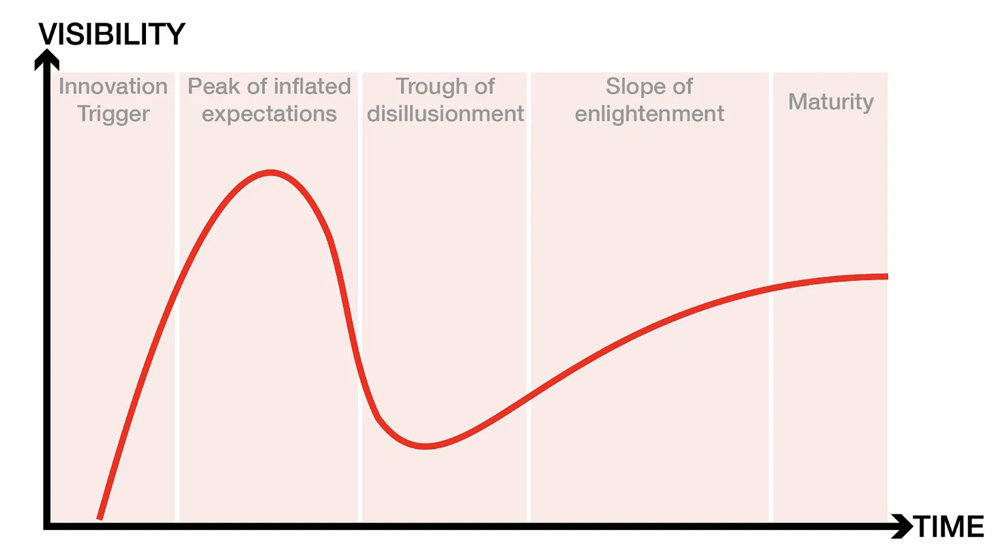
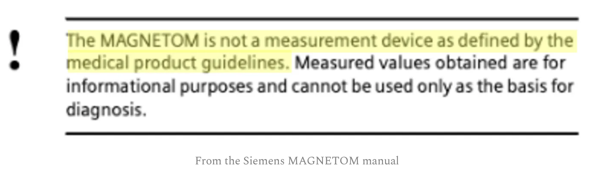

A recap of my ISMRM educational talk about MRI relaxometry, given at the 2022 educational sessions. Read on for a history of the field and some exciting 2023 announcements!
In 2022 I was invited by the International Society for Magnetic Resonance in Medicine to give an educational talk about relaxometry entitled “Relaxometry: Where, Why & How It Is & Is Not Used.”
Back when I accepted I told myself I really need to change the title, as it is too broad and has too many ampersands. However, as with most reminders I have set since 2020, this one is still on my to-do list, and the ISMRM conference proceedings wait for no one.
A recap of my ISMRM educational talk about MRI relaxometry, given at the 2022 educational sessions. Read on for a history of the field and some exciting 2023 announcements!
In 2022 I was invited by the International Society for Magnetic Resonance in Medicine to give an educational talk about relaxometry entitled “Relaxometry: Where, Why & How It Is & Is Not Used.”
Back when I accepted I told myself I really need to change the title, as it is too broad and has too many ampersands. However, as with most reminders I have set since 2020, this one is still on my to-do list, and the ISMRM conference proceedings wait for no one.
So here I am stuck with a title that reads more like an editorial than an educational talk. There are three questions I am supposed to answer (where, why, how), each one in the affirmative (it is used) and in the negative (is not used), producing a total of six sub-topics for a twenty minute presentation. Initially I was going to give an update to our 10-year old review of relaxometry applications, but instead I decided to go ahead with something more free-flowing, ampersands be damned!Relaxometry is a field with a glorious and controversial history, and no 20–minute slide deck will ever do it justice. It is full of egos and inventions, patents and lawsuits, high expectations and deep disillusionments. Rather than a slide dedicated to each of these, I want to give it an impressionistic overview, painted over with a coat of personal opinions and ruminations about the future of the field.
In doing so, I was inspired by my student Agâh Karakuzu, whose stellar PhD thesis reminded me how fun MR history is, while also teaching me facts that every aspiring relaxometer (is that a word?) needs to know. Many of the examples in this blog post are taken from Agah’s thesis, which recently won a special mention at the Polytechnique graduate thesis competition. I encourage you all to read it!
THE RELAXOMETRY HYPE CYCLE
For those unfamiliar with the Garther hype cycle, here's a brief recap. The cycle starts with a technology trigger and goes through a phase of unrealistically inflated expectations. Eventually the hype dies down as implementations fail to deliver on their promise, and disillusionment sets in. Technologies that manage to live through the trough reach the slope of enlightenment, when there is a flurry of second and third generation products that make the initial promise feel feasible again. Finally we reach the slope of productivity, where mainstream adoption takes off, and more incremental progress is made, eventually reaching steady state in terms of the technology's visibility.
The technology trigger
In the context of relaxometry, there is no doubt that the technology trigger is the invention of NMR and its ability to measure relaxation times. Researchers have been using NMR to characterize chemical compounds since the 1930s, but it was the insight of using in vivo relaxometry to tell a cancerous tissue sample from a healthy one, that gave birth to MRI. In 1970 Look and Locker published their seminal paper on measuring relaxation times with NMR, and in 1971 Damadian published a study on the use of NMR-based T1 and T2 values for detecting malignant tumors (Damadian, 1971). Based on this work, he issued a patent application titled “an apparatus and method for detecting cancer in tissue” in 1972, which was accepted in 1974 (Damadian, 1974).
Inflated expectations
With undeniable insight from the studies of Lauterbur and Mansfield, Damadian’s team built the first human MRI scanner in 1978 and made it commercially available in two years. This scanner was essentially a relaxometry device, using T1 and T2 measurements to create a malignancy index and to distinguish between cancerous and non-cancerous tissue. One could argue that the end of the 70s is the peak of inflated expectations, as many researchers believed that the future of MRI is relaxometry. Yet around the same time, GE started manufacturing scanners without paying royalty to Damadian as consideration for his patent. In the decade that followed, GE sold nearly 600 scanners, for which Damadian’s company Fonar filed a patent infringement lawsuit in the late 1990s and was awarded $128,705,766 as compensation for pecuniary damages.
Trough of disillusionment
It is precisely this lawsuit that resulted in disillusionment about the potential of relaxometry to revolutionize medical imaging. Basically, the court reached the verdict that GE infringed on Damadian’s patent on most counts, except for the count of relaxometry. The original judgment on the verdict reads:
“The Court found that GE had infringed U.S. Patent 3,789,832, MRI’s first patent, which was filed with the U.S. Patent Office in 1972 by Dr. Damadian. The Court concluded that MRI machines rely on the tissue NMR relaxations that were claimed in the patent as a method for detecting cancer, and that MRI machines use these tissue relaxations to control pixel brightness and supply the image contrasts that detect cancer in patients.”
However, the court determined that GE did not infringe on the patent most closely related to relaxometry, as "Fonar failed to establish the existence of standard T1 and T2 values, which are limitations of the asserted claims". In the years since, MRI manufacturers have insisted that their scanners are not measurement devices and their focus has been on T1- and T2-weighted images that can give visual (qualitative) information about the nature of tissue.
Slope of enlightenment
The relaxometry community spent the 1980s clawing its way out of the trough of disillusionment. The biggest problem was the time it took to generate a T1 or T2 map, as initial approaches were really slow. A relaxometry scan under 10 minutes was impossible for most body parts, and even those techniques that showed promise were hampered by field inhomogeneities, artifacts, and slow post-processing of the data.
The late 80s and early 90s resulted in several relaxometry breakthroughs, such as faster T1 and T2 mapping, as well as multi-component T2 mapping. There were also significant advances in T1rho and T2* mapping. Additionally, several articles were published on standard relaxation times (link, link) that leveled the field while contributing to the slope of enlightenment.
These initial efforts were followed by second-generation relaxometry techniques that provided shorter scan times and larger coverage, such as combining VFA and Look-Locker approaches with SSFP readouts (DESPOT, SASHA, MOLLI, ShMOLLI), non-cartesian data acquisitions, and dictionary based approaches.
Eventually advances in compressed sensing and dictionary-based approaches resulted in techniques such as MR fingerprinting and synthetic MRI that allow for simultaneous mapping of T1 and T2, making a full relaxometry scan clinically feasible for most body parts.
These technological innovations were complemented by the efforts of the National Institute of Standards and Technology (NIST) and the National Physical Laboratory (NPL) to build standardized phantoms for quantitative MRI, as well as the efforts of the Quantitative Imaging Biomarker Alliance to create standards for interpreting quantitative MRI maps. Additionally, the first book on qMRI was published by Paul Tofts in 2005.
Plateau of productivity
In 2012 I contributed to a review article on practical medical applications of MR relaxometry. In it we covered a broad range of relaxometry applications in the brain (multiple sclerosis, stroke, tumors and epilepsy), heart (iron overload, myocardial infarction, edema/inflammation, hemorrhage, methemoglobin, vasodilator function, infarct) and body (iron overload, cartilage disease, injury and infection, cancer). We identified three case studies with the greatest potential (MS, liver iron and acute myocardial infarction) and covered them in-depth. Additionally we also explained the physics behind the pulse sequences and the methodological challenges associated with the technology.
For this presentation I asked the Twitter community to give me an update on what has happened since 2012. I received a number of responses from leaders in the field, and I think it is an informative snapshot of what researchers are most excited about. Most of the themes covered in our 2012 review article are still present, with incremental innovations that confirm that we have reached a plateau of productivity. Below is a selection of tweets that capture the zeitgeist:
The space is short to go through each of these separately, but I have attempted to find the relevant articles and post them below each tweet at the following link, so feel free to explore and join the conversation. 2020 also saw the publication of the most comprehensive textbook on qMRI, edited by Nicole Seiberlich, Vikas Gulani, Adrienne Campbell-Washburn, Steven Sourbron, Mariya Ivanova Doneva, Fernando Calamante, and Houchun Harry Hu. Among the book’s 1000+ pages is our interactive chapter on T1/T1rho mapping, published under a Creative Commons license so you can read it for free.